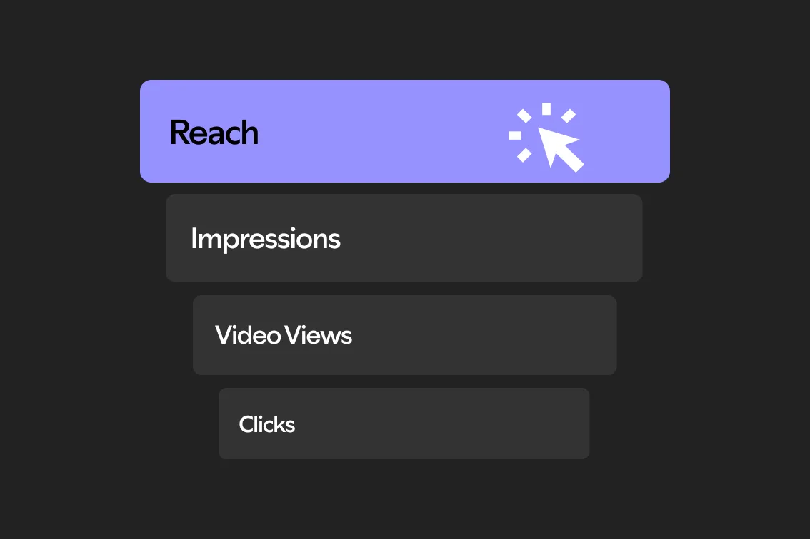
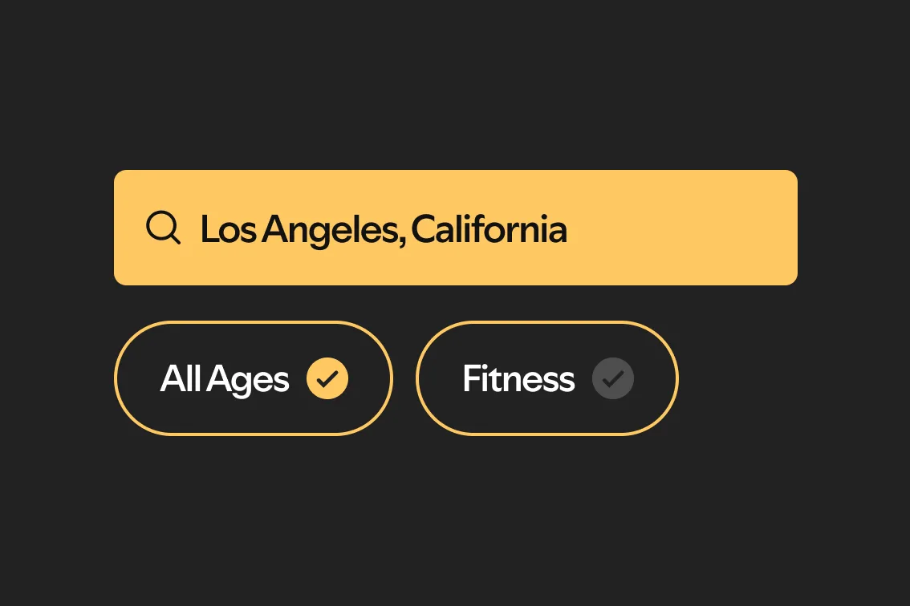
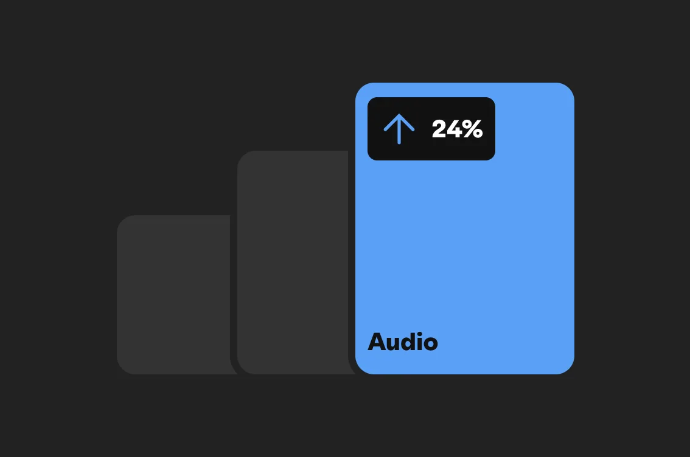

Seus anúncios rendem mais no Spotify
Anunciando no Spotify você tem mais oportunidades para alcançar seu público, mais atenção à sua mensagem e mais sucesso em todo o funil, além de formas de compra flexíveis para alcançar seus objetivos de negócios.
Os números não mentem
Quando os anúncios chegam no momento certo, eles não atrapalham, eles atraem. É por isso que os anúncios do Spotify são lembrados com mais frequência e de forma mais positiva do que em outras plataformas.¹
Conte sua história através da visão e do som
Cative novos públicos com formatos de anúncios interessantes que ajudarão a atingir os objetivos do seu negócio.

Anúncios de vídeo
O Spotify também faz vídeos! Com o storytelling visual no Spotify, você interage com os usuários quando eles estão olhando para a tela, aproveitando ao máximo os momentos de foco.
Faça suas campanhas repercutirem
Com o gerenciador de anúncios do Spotify, é muito fácil fazer publicidade. Confira a nossa página Começar para saber como.

O gerenciador de anúncios do Spotify ajudará você a identificar o objetivo de anúncio certo para conquistar os resultados importantes para seu negócio.

Com nossas ferramentas de segmentação, você encontra e alcança seus clientes em diversos dispositivos, momentos e tipos de anúncio.

Nossas ferramentas de medição são abrangentes para que você acompanhe o desempenho das suas campanhas.